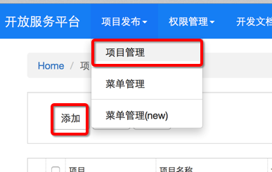
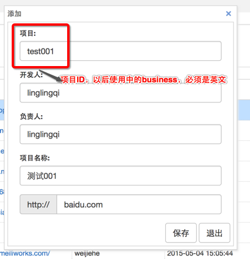
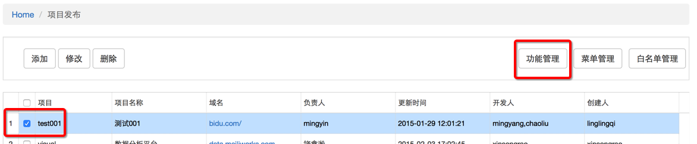
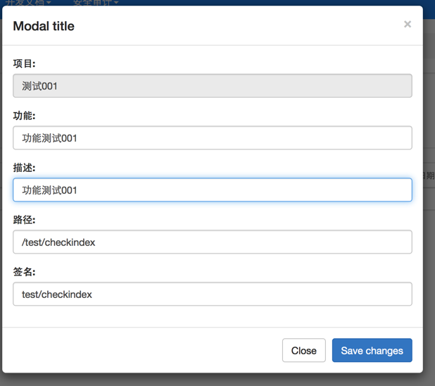
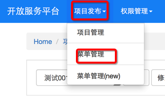
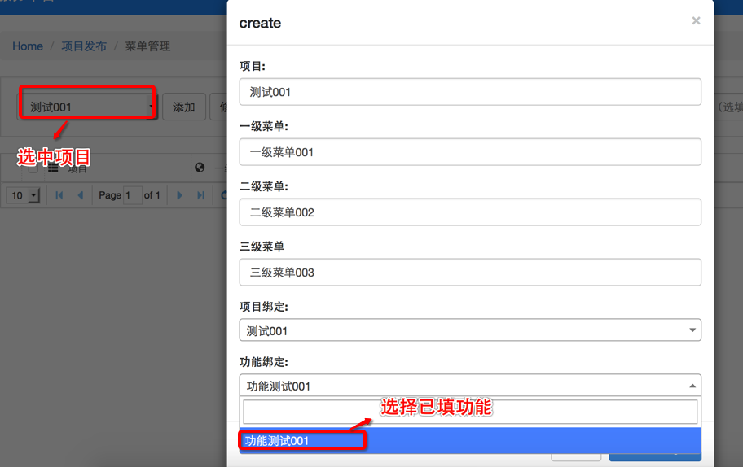

新的功能在菜单中展现，在开放平台主要进行创建项目，在项目下面创建功能，并在菜单中对项目和功能进行展现设置。
1、在 项目发布－>项目管理 下点击 添加 按钮添加项目；

2、添加项目如下图所示，注意项目名必须是英文

1、项目发布—>项目管理 中，进入并选中自己的项目，点击 功能管理创建功能，具体如下图：

2、点击功能管理，进入功能管理页，添加功能，具体如图：

1、在 项目发布—>菜单管理 中对应的项目下添加菜单

2、添加菜单框：

在添加菜单的时候，你选择的绑定项目可以和当前项目不一致，这个根据展现需求来确定，比如我在项目test001下定义了一个功能，但是我希望所有的平台都可以有菜单让用户访问我的功能，那么我可以将其设置为全局菜单
还有问题请咨询 戚玲玲，QQ：741605369，电话：13810315838